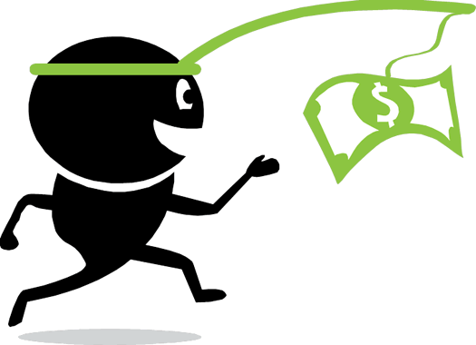

The bulk of forex trading takes place on what’s called the “interbank market“.
Unlike other financial markets like the New York Stock Exchange (NYSE) or London Stock Exchange (LSE), the forex market has neither a physical location nor a central exchange.
The forex market is considered an over-the-counter (OTC) market due to the fact that the entire market is run electronically, within a network of banks and non-bank financial institutions (NBFIs), continuously over a 24-hour period.
This means that the FX market is spread all over the globe with no central location.
Trades can take place anywhere as long as you have an internet connection!
The forex OTC market is by far the biggest and most popular financial market in the world.
And it is traded globally by a large number of individuals and organizations.
In an OTC market, participants can be picky and determine who they want to trade with depending on trading conditions, the attractiveness of prices, and the reputation of the trading counterparty (the other party who takes the opposite side of your trade).
The chart below shows the seven most actively traded currencies.
*Because two currencies are involved in each transaction, the sum of the percentage shares of individual currencies totals 200% instead of 100%
The U.S. dollar is the most traded currency, making up 84.9% of all transactions!
The euro’s share is second at 39.1%, while that of the yen is third at 19.0%.
As you can see, most of the major currencies are hogging the top spots on this list!
You’ve probably noticed how often we keep mentioning the U.S. dollar (USD).
If the USD is one-half of every major currency pair, and the majors comprise 75% of all trades, then it’s a must to pay attention to the U.S. dollar. The USD is king!
In fact, according to the International Monetary Fund (IMF), the U.S. dollar comprises roughly 62% of the world’s official foreign exchange reserves!
Foreign exchange reserves are assets held on reserve by a central bank in foreign currencies.
Because almost every investor, business, and central bank own it, they pay attention to the U.S. dollar.

There are also other significant reasons why the U.S. dollar plays a central role in the forex market:
Basically, the world is heavily dependent on continuous USD supply to facilitate trades, payments, and loans.
The U.S. dollar has more interest from global banks than any other currency. It’s the most commonly held denomination among foreign bank assets, which include loans and other USD-denominated securities, with a balance of around $16.7 trillion in the most recent data.
The main functions of the forex market are:
One important thing to note about the forex market is that while commercial and financial transactions are part of the trading volume, most currency trading is based on speculation.
In other words, most of the trading volume comes from traders that buy and sell based on the short-term price movements of currency pairs.
The trading volume brought about by speculators is estimated to be more than 90%!
The scale of the forex market means that the amount of buying and selling volume happening at any given time is extremely large!
This makes market liquidity, which is the ability to buy or sell a large quantity of something with minimal price impact, very HIGH.
The increase in market liquidity since the 1970s has yielded many benefits
From the perspective of a short-term trader, liquidity is very important because it determines how easily a price can change over a given time period.
A liquid market environment like forex enables huge trading volumes to happen with very little effect on the price, or price action.
While the forex market is relatively very liquid, the market depth could change depending on the currency pair and time of day.
In our forex trading sessions part of the School, we’ll explain how the time of your trades can affect the pair you’re trading.
In the meantime, let’s learn about the different ways that individuals can trade currencies.